ETK 800-Series
B / 192 л. с.
Конфигурация: Выбранная конфигурация
Бесплатно · Windows 10/11 · Неофициальное приложение
менеджер модов для BeamNG.drive®
Включайте и выключайте моды в один клик, ставьте их из репозитория beamng.com, находите мод, из-за которого вылетает игра, и начинайте заезд на нужной машине и карте.
v0.1.3.71 · 10,6 МБ
Без аккаунта · Без телеметрии · Не пишет в папку игры
Предпросмотр «Играть» и «Машины» доступен на широком экране. На телефоне показаны «Моды».
Статичный предпросмотр · Для интерактивного демо включите JavaScript
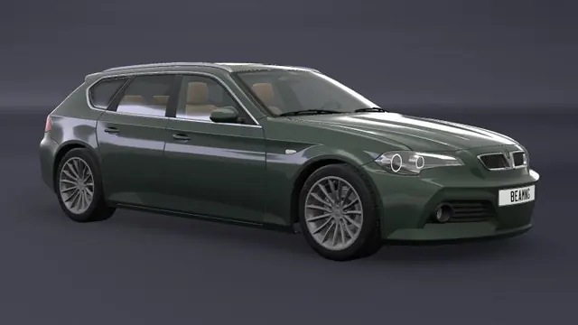
ETK 800-Series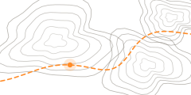
West Coast, USA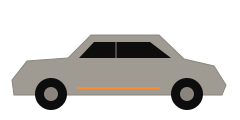
Demo HatchbackМашина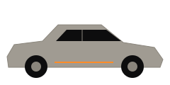
Demo Sedan GTМашина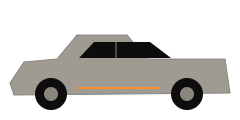
Demo PickupМашина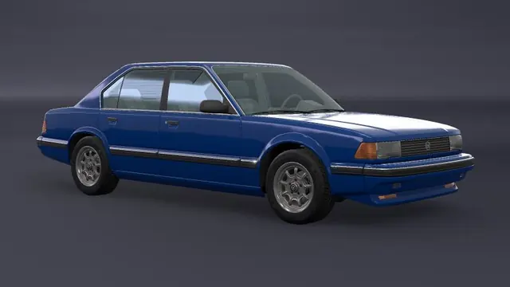
ETK I-Series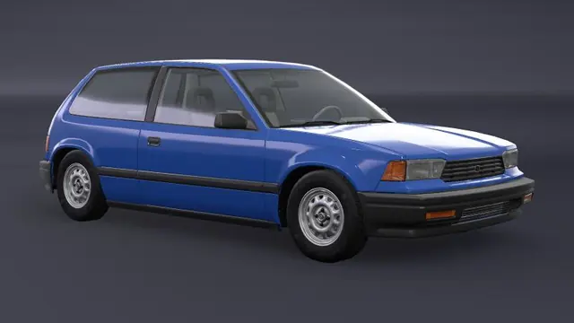
Ibishu Covet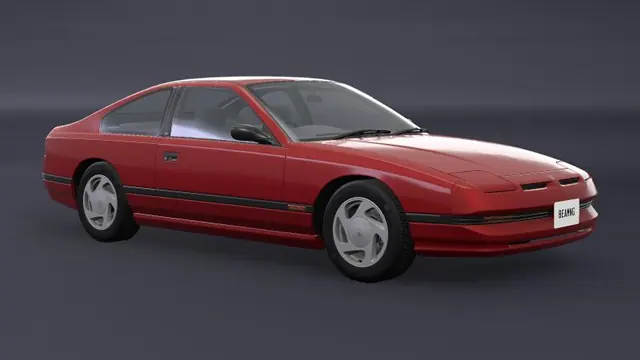
Ibishu BX-Series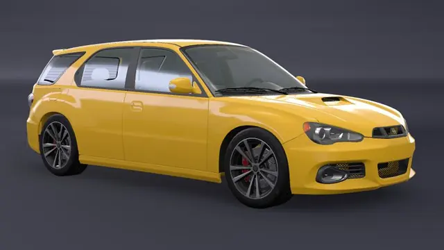
Hirochi Sunburst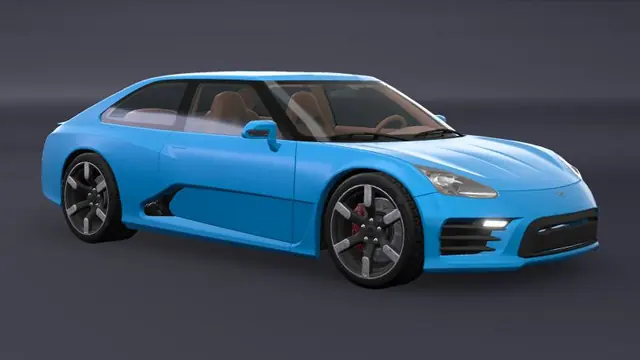
Hirochi SBR4Попробуйте окно ниже: переключайте вкладки, включайте моды и выбирайте профиль. Все данные демонстрационные; демо не запускает игру и не читает ваши файлы.
01 / Возможности
Попробуйте привычные действия ещё до установки.
Выберите машину и карту, время суток и трафик — и нажмите «Играть».
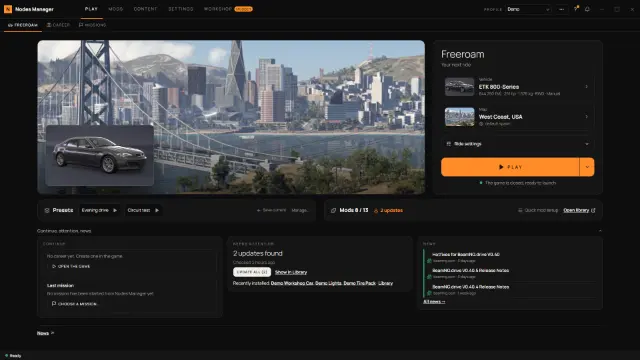
Включайте моды, раскладывайте по папкам и меткам, храните наборы в профилях и делитесь кодом.
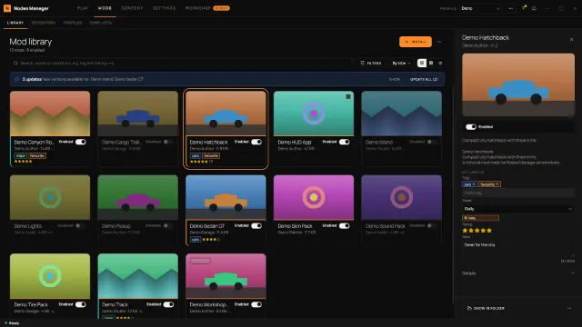
Смотрите официальный репозиторий и ставьте моды одной кнопкой. Файлы — прямо с beamng.com.
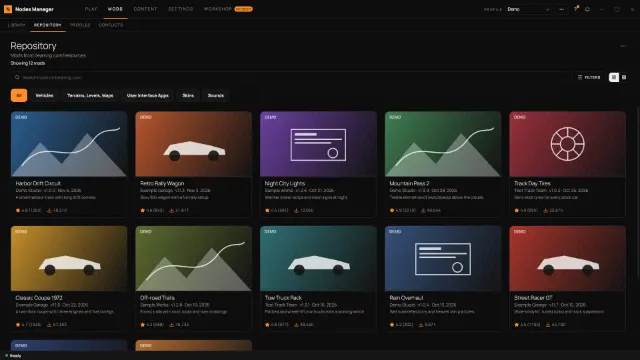
Все машины и карты с превью, классами D–X и фильтрами вроде power>400 country:japan.
Попробовать фильтр ↓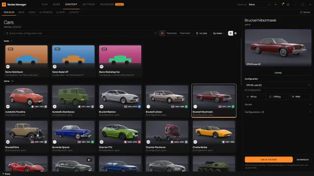
Рассмотрите любую машину в 3D, примерьте раскраски, сделайте снимки.
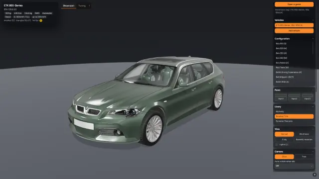
Игра вылетела? Мастер проверит моды по очереди и найдёт тот, что ломает загрузку.
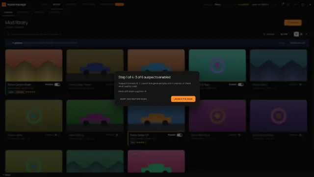
Наведение или фокус меняет предпросмотр.
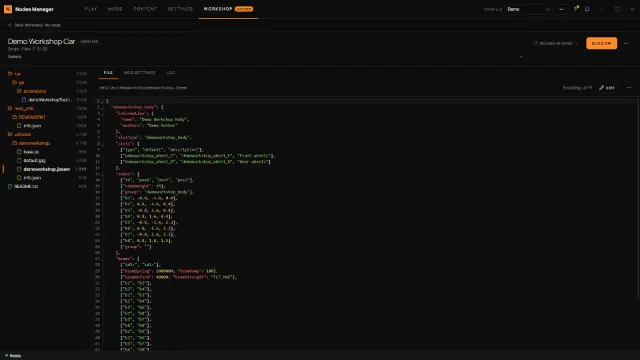
02 / Фильтр машин
Подберите подходящую машину с помощью фильтров из приложения
Включите JavaScript для фильтра. Ниже показаны все 12 машин.
12 из 12 машин
B / 192 л. с.
Конфигурация: Выбранная конфигурация
C / 140 л. с.
Конфигурация: Выбранная конфигурация
C / 89 л. с.
Конфигурация: Выбранная конфигурация
B / 145 л. с.
Конфигурация: Выбранная конфигурация
A / 276 л. с.
Конфигурация: Выбранная конфигурация
S / 454 л. с.
Конфигурация: Выбранная конфигурация
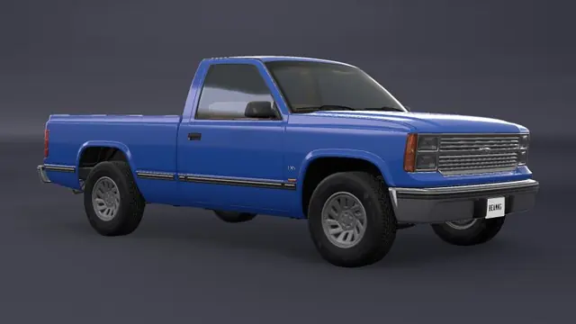
C / 197 л. с.
Конфигурация: Выбранная конфигурация
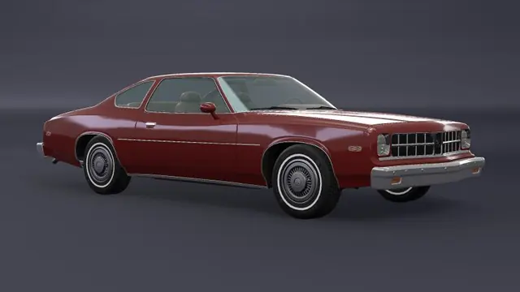
C / 190 л. с.
Конфигурация: Выбранная конфигурация
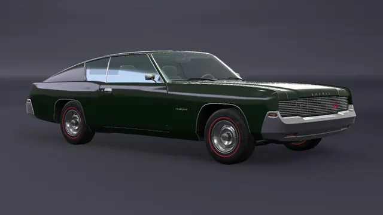
B / 194 л. с.
Конфигурация: Выбранная конфигурация
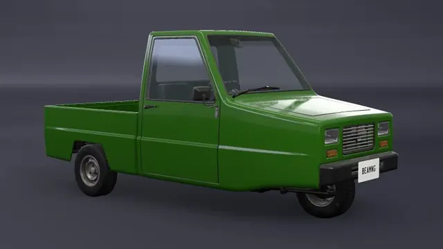
D / 31 л. с.
Конфигурация: Выбранная конфигурация
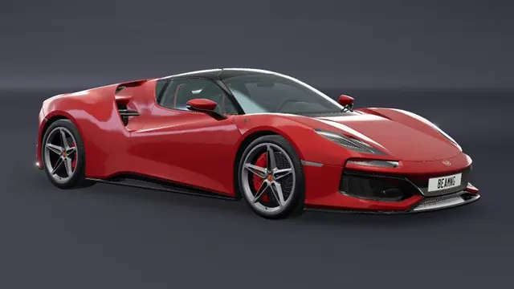
X / 661 л. с.
Конфигурация: Выбранная конфигурация
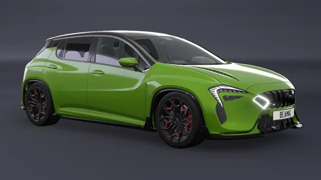
S / 409 л. с.
Конфигурация: Выбранная конфигурация
Ничего не нашлось. Попробуйте снизить мощность или класс.
Стоковые превью BeamNG.drive показывают базовую конфигурацию каждой модели. Фильтр меняет характеристики, а не изображение. Названия, изображения и характеристики машин принадлежат BeamNG GmbH и показаны только для иллюстрации работы программы.
Выборка 2–3 стоковых конфигураций на машину; значения взяты из игровых метаданных. Показана самая мощная подходящая конфигурация.
Пробел или & — И · Минус перед условием — НЕ · Все условия должны совпасть у одной конфигурации.
| Ключ | Значение |
|---|---|
power / hp / bhp / мощность | Мощность (л. с., кВт) |
weight / mass / вес / масса | Масса (кг, т) |
year / years / год / годы | Годы выпуска |
country / страна | Страна (код или название) |
class / класс | Класс: D < C < B < A < S < X |
drive / drivetrain / привод | Привод |
body / кузов | Кузов |
brand / марка / бренд | Марка |
: = < > <= >= · мощность>220квт & -привод:fwd
Nodes Manager ничего не отправляет автору, не хранит ваши моды на сервере и не пишет в папку установки игры.
| Папка | Читает | Пишет | Никогда |
|---|---|---|---|
Папка установки игры…\steamapps\common\BeamNG.drive | Стоковые машины, карты и превью. | Ничего. | Никогда не пишет сюда и не меняет исполняемые файлы игры. |
Папка пользователя BeamNG%LOCALAPPDATA%\BeamNG\BeamNG.drive\current | db.json, моды, настройки игры и превью. | db.json (с копией перед записью), моды, настройки и превью — по вашему действию. Перед изменением db.json игра должна быть закрыта. | Не меняет db.json при работающей игре. |
Данные программы%APPDATA%\NodesManager | Профили, избранное и кэш. | Профили, настройки, кэш превью, резервные копии и скачанные архивы. | Не отправляет эти файлы автору. |
Запросы нужны открытым вами функциям. Проверка обновлений также выполняется при запуске, не чаще раза в сутки; её можно выключить: «Настройки → Дополнительно → Обновления приложения».
«Настройки → Папки и файлы → Обслуживание → Резервная копия настроек → Восстановить из копии» возвращает настройки, конфиги машин и db.json. Перед восстановлением db.json закройте игру.
Подпись обновлений Tauri (minisign) проверяется до установки обновления. Если она не совпала, установка отменяется. Это отдельный механизм от сертификата Windows: у установщика такого сертификата пока нет.
Это решение автора. Вместо этого мы открыто описываем, что программа делает с вашими файлами, и даём то, что можно проверить: контрольные суммы, список сторонних компонентов и политику конфиденциальности.
Не меняет файлы установки игры и её исполняемые файлы, не обходит защиту, не раздаёт и не хранит чужие моды, не собирает данные, ничего не ставит без вашего действия.
Бесплатно · Windows 10/11 64-bit · BeamNG.drive (Steam)
Nodes Manager — программа для Windows. Откройте эту страницу на компьютере.
Nodes Manager — менеджер модов для BeamNG.driveДанные релиза: резервные при сборке
5ecdc5ef023510a8e18758bce8006a72fd421020b293d9e51fc7e82d6581fad9Возьмите установщик с официальной страницы Releases.
Выберите язык и примите соглашение.
Nodes Manager может найти установленную через Steam игру.
Установщик пока не подписан сертификатом Windows, поэтому SmartScreen может показать предупреждение. Мы пока не приобрели подпись — ваша поддержка поможет нам избавиться от этого предупреждения. Нажмите «Подробнее» → «Выполнить в любом случае». Файл можно проверить по контрольной сумме SHA-256 и на VirusTotal (ссылки — в описании каждого релиза).
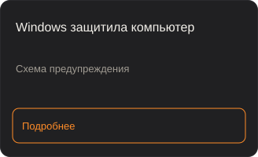
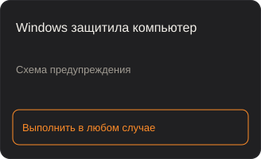
Get-FileHash -LiteralPath '.\Nodes-Manager_0.1.3.71_x64-setup.exe' -Algorithm SHA256SHA-256 подтверждает совпадение с опубликованным файлом, а не его безопасность.
Проверить файл на VirusTotalПоддержать проектФайлы, обновления и помощь.
Да. Без рекламы, аккаунтов и платных функций.
Не пишет в папку установки игры, делает копию db.json перед изменениями и ничего не отправляет автору. Подробнее — «Безопасность».
Исходный код закрыт. Это решение автора. Вместо этого мы открыто описываем, что программа делает с вашими файлами, и даём то, что можно проверить: контрольные суммы, список сторонних компонентов и политику конфиденциальности.
Nodes Manager только управляет модами на вашем компьютере и не изменяет саму игру. У онлайн-серверов (например, BeamMP) свои правила — проверьте их перед игрой.
Интеграции с BeamMP нет: Nodes Manager работает с одиночной игрой. BeamMP запускается своим лаунчером и при входе на сервер может выключить ваши моды — после игры в BeamMP откройте Библиотеку и проверьте, какие моды включены.
В папку пользователя BeamNG и %APPDATA%\NodesManager. Подробнее — карта папок.
«Параметры → Приложения → Nodes Manager → Удалить»; данные — папка %APPDATA%\NodesManager. Моды остаются.
Если проверка включена, программа раз в сутки проверяет новую версию и показывает плашку. Нажмите «Установить и перезапустить». Или скачайте здесь.
В Issues на GitHub; укажите версию («Настройки → Дополнительно → О программе»).
Nodes Manager — неофициальное приложение, не создано, не поддерживается и не одобрено BeamNG GmbH. BeamNG и BeamNG.drive — зарегистрированные товарные знаки BeamNG GmbH.
Nodes Manager бесплатный, его делает один человек. Поддержка поможет купить сертификат подписи — и Windows перестанет предупреждать об установщике. Поддержка добровольная, идёт через Boosty и ничего не открывает в программе. С вашего согласия ник на Boosty и сумма появятся в списке поддержавших в программе.
Nodes Manager — менеджер модов для BeamNG.drive